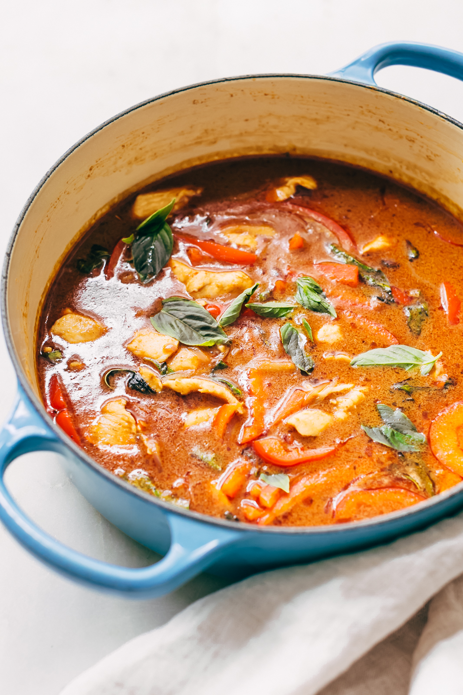

Panang chicken curry

Panang curry in under half and hour...
Description:
Panang curry serves up big flavours reminiscent of the traditional red curry.
It packs a serious punch though which is created with the sneaky addition of tamarind paste
Here is a guide how to create your own version in minimal time in the kitchen.
Ingredients:
- Panang curry paste
- fish sauce
- tamarind concentrate
- creamy peanut butter
- 8 skinless, boneless chicken thighs, cut into large chunks
- sliced veggies
- coconut milk
- 1tbsp vegetable oil
- 1tbsp ginger & garlic paste
Method:
- Grab youself a glass of freezing cold dry white wine. A Petit Chablis will do nicely ;)
- Grab your coconut milk, without shaking the can, skim a couple of tablespoons off the top and add that
to your hot skillet or saute pan. This is the coconut cream; it’s loaded with oil so we’ll use it to cook our curry paste.
- Next add the curry paste and peanut butter and allow the flavors to wake up. Make sure it doesn’t burn though!
- Add the chicken and mix it so that everything is coated well.
- Add the rest of the coconut milk along with the fish sauce, tamarind, sugar, veggies, and let it all just simmer
until the chicken cooks through and the curry thickens, that’s it!